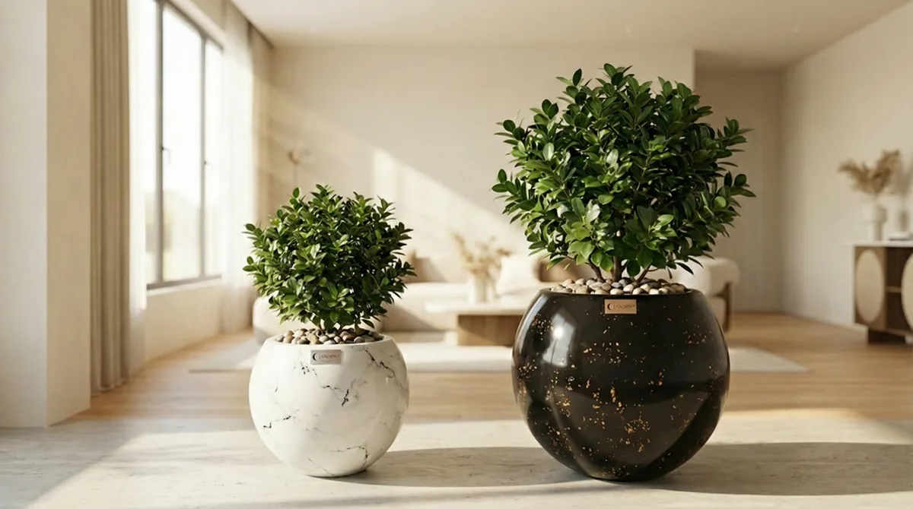

İçine sinen tasarım
Yuvarlak hatlar, zarif silüetler ve farklı dokular. Kendi tarzına yer aç.
Bizce bir köşeyi sevmek için her şeyi değiştirmek gerekmez. Bazen doğru bir form, bazen yeni bir doku, bazen de biraz yeşil yeter.
Koleksiyonu keşfet ↗
Birlikte, daha güzel.Lunapot, “ay” anlamına gelen Luna ile “saksı” anlamına gelen pot kelimelerini bir araya getiriyor. Tasarıma bakışımız da bu birliktelikten besleniyor: sakin formlar, karakterli yüzeyler ve bitkilere yer açan yaşam alanları.
Nova ve Luna saksı koleksiyonlarımızı, toprak ve bitki bakım seçenekleriyle aynı yerde buluşturuyoruz. İster tek bir köşeye küçük bir dokunuş yap, ister yaşam alanın için yeni bir başlangıç.
Yuvarlak hatlar, zarif silüetler ve farklı dokular. Kendi tarzına yer aç.
Bir saksı ya da bir paket toprak. Değişimin büyüklüğüne sen karar ver.
Koleksiyonu keşfet, seçenekleri karşılaştır, bütçene göre seç.